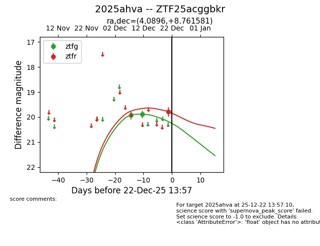
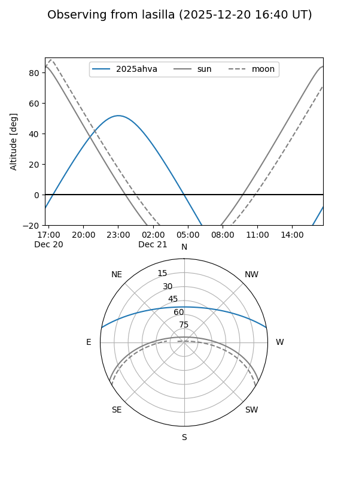
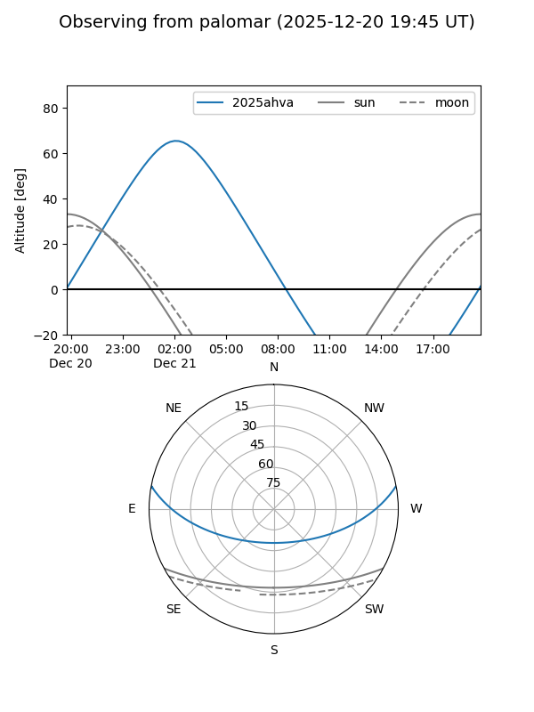

2025ahva
Target 2025ahva at 2025-12-21 07:03
Aliases and brokers:
FINK: fink-portal.org/ZTF25acggbkr
Lasair: lasair-ztf.lsst.ac.uk/objects/ZTF25acggbkr
ALeRCE: alerce.online/object/ZTF25acggbkr
TNS: wis-tns.org/object/2025ahva
YSE: ziggy.ucolick.org/yse/transient_detail/2025ahva
alt names
ZTF25acggbkr (ztf,fink_ztf)
2025ahva (tns,yse)
Coordinates:
equatorial (ra, dec) = 4.0896,+8.76158
equatorial (HMS+DMS) = 00:16:21.51,+08:45:41.69
galactic (l, b) = (108.3912,-53.11693)
Flags:
Photometry:
last ztfg=19.89
2 ztfg detections
Lightcurve

Visibility


Additional plots